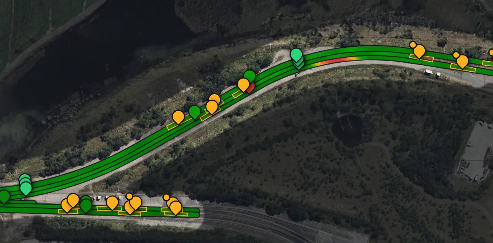
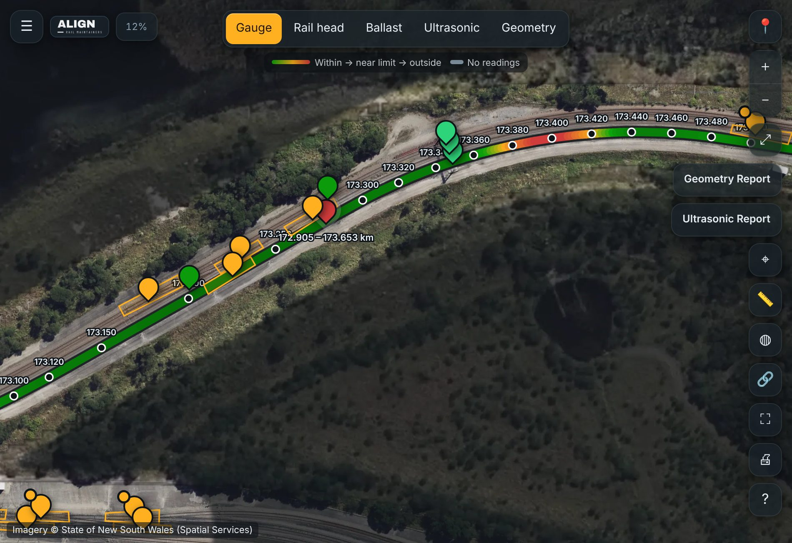
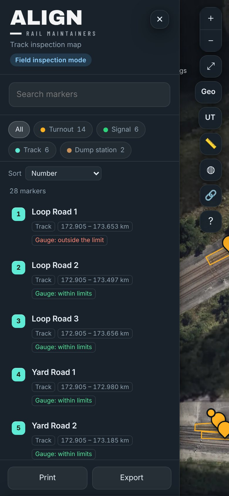

Interactive inspection maps
Your track, on your own inspection map.
Every turnout, reading, photo and report on an aerial map of your site. Open it at your desk, or on a phone out on the track.

See the condition of every road.
Tracks are coloured by their latest readings: green within limits, amber near the limit, red outside it. Open a road to see every reading at its chainage.
One tap switches between gauge, rail head wear, ballast, ultrasonic and geometry.

Everything about your track, in one place.
Every asset
A marker on every turnout, crossing, track section and dump station, and a list you can search and sort.
Photos behind every result
Every check can carry its own photos, filed with the inspection.
Full history, kept
Every inspection since day one, so you see wear coming before it becomes urgent.
Reports when you need them
Readings tables and inspections print or save as a PDF for your records, auditors or contractors.
On every phone on your team.
The same map on every phone, with your logo on it. The field app installs from a QR code, so there’s no app store needed.
Out of range in a cutting? The field app opens with the last saved copy, so every asset’s details are still there.

Specialist testing on the same map.
Ultrasonic indications and track geometry findings are drawn over your track at their chainage, beside your inspections.

Common questions.
Who can see our map?
Your team. Your map is private, with logins for the people who need it.
Does it work without mobile signal?
Yes. The field app opens with the last saved copy, so every asset’s details are still there when you’re out of range.
Do we need to install anything?
No. The map opens in a web browser, and the field app installs on a phone from a QR code, with no app store needed.
What imagery is the map built on?
Aerial imagery of your site from mapping services such as NSW Spatial Services in New South Wales.
What happens if we stop?
You keep your map. There are no lock-in contracts.
See it on a working loop. Then on yours.
Try the demo map, then send us your site’s location for a free remote quote.